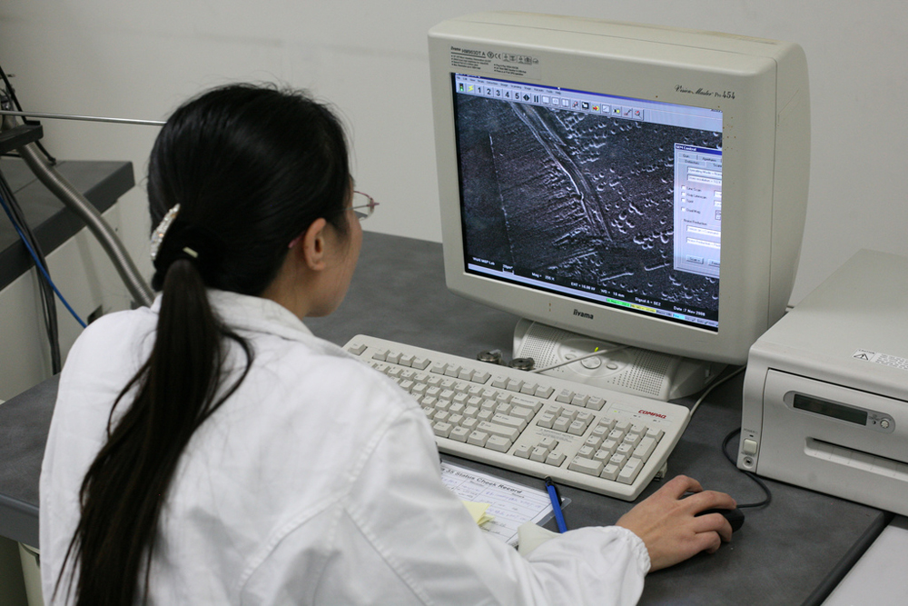
- Explain the image formation by the eye.
- Explain why peripheral images lack detail and color.
- Define refractive indices.
- Analyze the accommodation of the eye for distant and near vision.
The eye is perhaps the most interesting of all optical instruments. The eye is remarkable in how it forms images and in the richness of detail and color it can detect. However, our eyes commonly need some correction, to reach what is called “normal” vision, but should be called ideal rather than normal. Image formation by our eyes and common vision correction are easy to analyze with the optics discussed in "Geometric Optics."
Figure 1 shows the basic anatomy of the eye. The cornea and lens form a system that, to a good approximation, acts as a single thin lens. For clear vision, a real image must be projected onto the light-sensitive retina, which lies at a fixed distance from the lens. The lens of the eye adjusts its power to produce an image on the retina for objects at different distances. The center of the image falls on the fovea, which has the greatest density of light receptors and the greatest acuity (sharpness) in the visual field. The variable opening (or pupil) of the eye along with chemical adaptation allows the eye to detect light intensities from the lowest observable to \(10^{10}\) times greater (without damage). This is an incredible range of detection. Our eyes perform a vast number of functions, such as sense direction, movement, sophisticated colors, and distance. Processing of visual nerve impulses begins with interconnections in the retina and continues in the brain. The optic nerve conveys signals received by the eye to the brain.
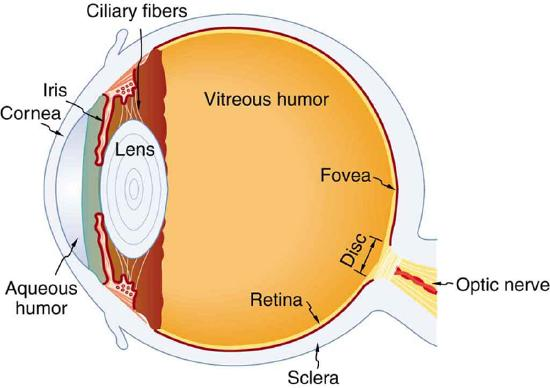
Refractive indices are crucial to image formation using lenses. The table shows refractive indices relevant to the eye. The biggest change in the refractive index, and bending of rays, occurs at the cornea rather than the lens. The ray diagram in Figure 2 shows image formation by the cornea and lens of the eye. The rays bend according to the refractive indices provided in the table. The cornea provides about two-thirds of the power of the eye, owing to the fact that speed of light changes considerably while traveling from air into cornea. The lens provides the remaining power needed to produce an image on the retina. The cornea and lens can be treated as a single thin lens, even though the light rays pass through several layers of material (such as cornea, aqueous humor, several layers in the lens, and vitreous humor), changing direction at each interface. The image formed is much like the one produced by a single convex lens. This is a case 1 image. Images formed in the eye are inverted but the brain inverts them once more to make them seem upright.
| Material | Index of Refraction |
|---|---|
| Water | 1.33 |
| Air | 1.0 |
| Comea | 1.38 |
| Aqueous humor | 1.34 |
| Lens | 1.41 average (varies throughout the lens, greatest in center) |
| Vitreous humor | 1.34 |
Refractive Indices Relevant to the Eye
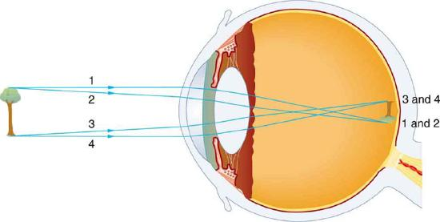
As noted, the image must fall precisely on the retina to produce clear vision -- that is, the image distance \(d_{i}\) must equal the lens-to-retina distance. Because the lens-to-retina distance does not change, the image distance \(d_{i}\) must be the same for objects at all distances. The eye manages this by varying the power (and focal length) of the lens to accommodate for objects at various distances. The process of adjusting the eye’s focal length is calledaccommodation. A person with normal (ideal) vision can see objects clearly at distances ranging from 25 cm to essentially infinity. However, although the near point (the shortest distance at which a sharp focus can be obtained) increases with age (becoming meters for some older people), we will consider it to be 25 cm in our treatment here.
Figure 3 shows the accommodation of the eye for distant and near vision. Since light rays from a nearby object can diverge and still enter the eye, the lens must be more converging (more powerful) for close vision than for distant vision. To be more converging, the lens is made thicker by the action of the ciliary muscle surrounding it. The eye is most relaxed when viewing distant objects, one reason that microscopes and telescopes are designed to produce distant images. Vision of very distant objects is calledtotally relaxed,while close vision is termedaccommodated, with the closest vision beingfully accommodated.
![Two cross-sectional views of eye anatomy are shown. In part a of the figure, parallel rays from distant object are entering the eye and are converging on the retina to produce an inverted image of the tree shown above the principle axis. The interior lens of the eye is relaxed and least rounded, given as P small. Distance of image d i is equal to two centimeters, which is the measure of the distance from lens to retina. Distance of object d o is given as very large. In part b of the figure, rays from a button, which is a nearby object, are shown to diverge as they enter the eye. The interior lens of the eye, P large, converges the rays to form an image at retina, below the principle axis. Distance of image d i is equal to two centimeters, which is the measure of distance from lens to retina. Distance of object d o is given as very small.](images/ch26/fig26-4-two-cross-sectional-views-of-eye-anatomy.jpg)
We will use the thin lens equations to examine image formation by the eye quantitatively. First, note the power of a lens is given as \(p = 1/f\), so we rewrite the thin lens equations as \[P = \frac{1}{d_{o}} + \frac{1}{d_{i}} \label{26.2.1}\] and \[\frac{h_{i}}{h_{o}} = -\frac{d_{i}}{d_{o}} = m \label{26.2.2}.\] We understand that \(d_{i}\) must equal the lens-to-retina distance to obtain clear vision, and that normal vision is possible for objects at distances \(d_{o} = 25 cm\) to infinity.
TAKE-HOME EXPERIMENT: THE PUPIL
Look at the central transparent area of someone’s eye, the pupil, in normal room light. Estimate the diameter of the pupil. Now turn off the lights and darken the room. After a few minutes turn on the lights and promptly estimate the diameter of the pupil. What happens to the pupil as the eye adjusts to the room light? Explain your observations.
The eye can detect an impressive amount of detail, considering how small the image is on the retina. To get some idea of how small the image can be, consider the following example.
What is the size of the image on the retina of a \(1.20 \times 10^{-2}\) cm diameter human hair, held at arm’s length (60.0 cm) away? Take the lens-to-retina distance to be 2.00 cm.
We want to find the height of the image \(h_{i}\), given the height of the object is \(h_{o} = 1.20 \times 10^{-2}\) cm. We also know that the object is 60.0 cm away, so that \(d_{o} = 60.0 cm\). For clear vision, the image distance must equal the lens-to-retina distance, and so \(d_{i} = 2.00 cm\). The equation \(\frac{h_{i}}{h_{o}} = - \frac{d_{i}}{d_{o}} = m\) can be used to find \(h_{i}\) with the known information.
The only unknown variable in the equation \(\frac{h_{i}}{h_{o}} = -\frac{d_{i}}{d_{o}} = m\) is \(h_{i}\): \[\frac{h_{i}}{h_{o}} = -\frac{d_{i}}{d_{o}}.\] Rearranging to isolate \(h_{i}\) yields \[h_{i} = -h_{o} \cdot \frac{d_{i}}{d_{o}}. \label{26.2.3}\] Substituting the known values gives \[h_{i} = - \left( 1.20 \times 10^{-2} cm \right) \frac{2.00 cm}{60.0 cm}\] \[= -4.00 \times 10^{-4} cm.\]
This truly small image is not the smallest discernible -- that is, the limit to visual acuity is even smaller than this. Limitations on visual acuity have to do with the wave properties of light and will be discussed in the next chapter. Some limitation is also due to the inherent anatomy of the eye and processing that occurs in our brain.
Calculate the power of the eye when viewing objects at the greatest and smallest distances possible with normal vision, assuming a lens-to-retina distance of 2.00 cm (a typical value).
For clear vision, the image must be on the retina, and so \(d_{i} = 2.00 cm\) here. For distant vision, \(d_{o} \approx \infty\), and for close vision, \(d_{o} = 25.0 cm\), as discussed earlier. The equation \(P = \frac{1}{d_{o}} + \frac{1}{d_{i}}\) as written just above, can be used directly to solve for \(P\) in both cases, since we know \(d_{i}\) and \(d_{o}\). Power has units of diopters, where \(1 D = 1/m\), and so we should express all distances in meters.
For distant vision, \[P = \frac{1}{d_{o}} + \frac{1}{d_{i}} = \frac{1}{\infty} + \frac{1}{0.0200m}.\] Since \(1/ \infty = 0\), this gives \[P = 0 + 50.0/m = 50.0 D \left(distant~vision\right).\] Now, for close vision, \[P = \frac{1}{d_{o}} + \frac{1}{d_{i}} = \frac{1}{0.250 m} + \frac{1}{0.0200 m}\] \[= \frac{4.00}{m} + \frac{50.0}{m} = 4.00D + 50.0 D\] \[= 54.0 D \left( close~vision \right)l\]
For an eye with this typical 2.00 cm lens-to-retina distance, the power of the eye ranges from 50.0 D (for distant totally relaxed vision) to 54.0 D (for close fully accommodated vision), which is an 8% increase. This increase in power for close vision is consistent with the preceding discussion and the ray tracing in Figure 3. An 8% ability to accommodate is considered normal but is typical for people who are about 40 years old. Younger people have greater accommodation ability, whereas older people gradually lose the ability to accommodate. When an optometrist identifies accommodation as a problem in elder people, it is most likely due to stiffening of the lens. The lens of the eye changes with age in ways that tend to preserve the ability to see distant objects clearly but do not allow the eye to accommodate for close vision, a condition calledpresbyopia(literally, elder eye). To correct this vision defect, we place a converging, positive power lens in front of the eye, such as found in reading glasses. Commonly available reading glasses are rated by their power in diopters, typically ranging from 1.0 to 3.5 D.
📖 OpenStax College Physics, Section 26.1. openstax.org · CC BY 4.0
- Identify and discuss common vision defects.
- Explain nearsightedness and farsightedness corrections.
- Explain laser vision correction.
The need for some type of vision correction is very common. Common vision defects are easy to understand, and some are simple to correct. Figure illustrates two common vision defects.Nearsightedness, ormyopia, is the inability to see distant objects clearly while close objects are clear. The eye overconverges the nearly parallel rays from a distant object, and the rays cross in front of the retina. More divergent rays from a close object are converged on the retina for a clear image. The distance to the farthest object that can be seen clearly is called the far point of the eye (normally infinity).Farsightedness, orhyperopia, is the inability to see close objects clearly while distant objects may be clear. A farsighted eye does not converge sufficient rays from a close object to make the rays meet on the retina. Less diverging rays from a distant object can be converged for a clear image. The distance to the closest object that can be seen clearly is called thenear point of the eye(normally 25 cm).
![Part a shows two figures of cross-sectional area of eye depicting myopia. In both the figures, parallel rays coming from an object placed at infinity are converging in front of the retina. Figure on the left shows the lens of the eye too strong and figure on the right illustrates the shape of the eye too long. Part b shows two figures of cross-sectional area of eye depicting hyperopia. In both the figures, rays coming from a close object are shown which are converging at the back of the retina. Figure on the left shows the lens of the eye too weak and figure on the right illustrates the shape of the eye too short.](images/ch26/fig26-5-part-a-shows-two-figures-of-cross-sectio.jpg)
Since the nearsighted eye over converges light rays, the correction for nearsightedness is to place a diverging spectacle lens in front of the eye. This reduces the power of an eye that is too powerful. Another way of thinking about this is that a diverging spectacle lens produces a case 3 image, which is closer to the eye than the object (Figure . To determine the spectacle power needed for correction, you must know the person’s far point -- that is, you must know the greatest distance at which the person can see clearly. Then the image produced by a spectacle lens must be at this distance or closer for the nearsighted person to be able to see it clearly. It is worth noting that wearing glasses does not change the eye in any way. The eyeglass lens is simply used to create an image of the object at a distance where the nearsighted person can see it clearly. Whereas someone not wearing glasses can see clearlyobjectsthat fall between their near point and their far point, someone wearing glasses can seeimagesthat fall between their near point and their far point.
![Two illustrations of cross-sectional view of an eye are shown. In the first figure, a diverging spectacle lens is placed in front of the eye structure. A ray diagram for the diverging lens is also shown. Parallel rays from a distant object, taken as tree, are striking the lens and then diverging. A smaller image of the tree is shown in front of the lens. In the second figure, a ray diagram with respect to the diverging lens within the eye structure is shown. Parallel rays from a distant object are striking the diverging lens, entering the lens of the eye, and converging at retina. This explains the correction of nearsightedness using a diverging lens.](images/ch26/fig26-6-two-illustrations-of-cross-sectional-vie.jpg)
What power of spectacle lens is needed to correct the vision of a nearsighted person whose far point is 30.0 cm? Assume the spectacle (corrective) lens is held 1.50 cm away from the eye by eyeglass frames.
You want this nearsighted person to be able to see very distant objects clearly. That means the spectacle lens must produce an image 30.0 cm from the eye for an object very far away. An image 30.0 cm from the eye will be 28.5 cm to the left of the spectacle lens (Figure . Therefore, we must get \(d_{i} = -28.5 cm\) when \(d_{o} \approx \infty \). The image distance is negative, because it is on the same side of the spectacle as the object.
Since \(d_{i}\) and \(d_{o}\) are known, the power of the spectacle lens can be found using \(P = \frac{1}{d_{o}} + \frac{1}{d_{i}}\) as written earlier:
Since \(1/ \infty = 0\), we obtain: \[P = 0 - 3.51/m = -3.51 D.\]
The negative power indicates a diverging (or concave) lens, as expected. The spectacle produces a case 3 image closer to the eye, where the person can see it. If you examine eyeglasses for nearsighted people, you will find the lenses are thinnest in the center. Additionally, if you examine a prescription for eyeglasses for nearsighted people, you will find that the prescribed power is negative and given in units of diopters.
Since the farsighted eye under converges light rays, the correction for farsightedness is to place a converging spectacle lens in front of the eye. This increases the power of an eye that is too weak. Another way of thinking about this is that a converging spectacle lens produces a case 2 image, which is farther from the eye than the object (Figure . To determine the spectacle power needed for correction, you must know the person’s near point -- that is, you must know the smallest distance at which the person can see clearly. Then the image produced by a spectacle lens must be at this distance or farther for the farsighted person to be able to see it clearly.
![Two illustrations of a cross-sectional view of an eye are shown. In the upper part of the figure, a converging lens is placed in front of the eye structure and a close object before it. A ray diagram showing the rays from the object are striking the lens; converging a bit and entering the eyes; converging again through the eye lens and forming an image at the retina, and another set of rays converge behind the retina. The lower part of the figure shows a virtual image, an object, a converging lens, and the internal structure of an eye. Parallel rays from the object are entering the eyes and converging at a point on the retina. An image larger than the object image is formed behind the object on the same side of the lens.](images/ch26/fig26-7-two-illustrations-of-a-cross-sectional-v.jpg)
What power of spectacle lens is needed to allow a farsighted person, whose near point is 1.00 m, to see an object clearly that is 25.0 cm away? Assume the spectacle (corrective) lens is held 1.50 cm away from the eye by eyeglass frames.
When an object is held 25.0 cm from the person’s eyes, the spectacle lens must produce an image 1.00 m away (the near point). An image 1.00 m from the eye will be 98.5 cm to the left of the spectacle lens because the spectacle lens is 1.50 cm from the eye (Figure . Therefore, \(d_{i} = -98.5 cm\). The image distance is negative, because it is on the same side of the spectacle as the object. The object is 23.5 cm to the left of the spectacle, so that \(d_{o} = 23.5 cm\).
Since \(d_{i}\) and \(d_{o}\) are known, the power of the spectacle lens can be found using \(P = \frac{1}{d_{o}} + \frac{1}{d_{i}}\): \[P = \frac{1}{d_{o}} + \frac{1}{d_{i}} = \frac{1}{0.235 m} + \frac{1}{-0.985 m}\] \[4.26D - 1.02D = 3.24D.\]
The positive power indicates a converging (convex) lens, as expected. The convex spectacle produces a case 2 image farther from the eye, where the person can see it. If you examine eyeglasses of farsighted people, you will find the lenses to be thickest in the center. In addition, a prescription of eyeglasses for farsighted people has a prescribed power that is positive.
Another common vision defect isastigmatisman unevenness or asymmetry in the focus of the eye. For example, rays passing through a vertical region of the eye may focus closer than rays passing through a horizontal region, resulting in the image appearing elongated. This is mostly due to irregularities in the shape of the cornea but can also be due to lens irregularities or unevenness in the retina. Because of these irregularities, different parts of the lens system produce images at different locations. The eye-brain system can compensate for some of these irregularities, but they generally manifest themselves as less distinct vision or sharper images along certain axes. Figure shows a chart used to detect astigmatism. Astigmatism can be at least partially corrected with a spectacle having the opposite irregularity of the eye. If an eyeglass prescription has a cylindrical correction, it is there to correct astigmatism. The normal corrections for short- or farsightedness are spherical corrections, uniform along all axes.
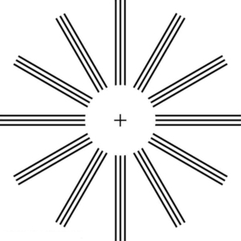
Contact lenses have advantages over glasses beyond their cosmetic aspects. One problem with glasses is that as the eye moves, it is not at a fixed distance from the spectacle lens. Contacts rest on and move with the eye, eliminating this problem. Because contacts cover a significant portion of the cornea, they provide superior peripheral vision compared with eyeglasses. Contacts also correct some corneal astigmatism caused by surface irregularities. The tear layer between the smooth contact and the cornea fills in the irregularities. Since the index of refraction of the tear layer and the cornea are very similar, you now have a regular optical surface in place of an irregular one. If the curvature of a contact lens is not the same as the cornea (as may be necessary with some individuals to obtain a comfortable fit), the tear layer between the contact and cornea acts as a lens. If the tear layer is thinner in the center than at the edges, it has a negative power, for example. Skilled optometrists will adjust the power of the contact to compensate.
Laser vision correctionhas progressed rapidly in the last few years. It is the latest and by far the most successful in a series of procedures that correct vision by reshaping the cornea. As noted at the beginning of this section, the cornea accounts for about two-thirds of the power of the eye. Thus, small adjustments of its curvature have the same effect as putting a lens in front of the eye. To a reasonable approximation, the power of multiple lenses placed close together equals the sum of their powers. For example, a concave spectacle lens (for nearsightedness) having \(P = -3.00 D\) has the same effect on vision as reducing the power of the eye itself by 3.00 D. So to correct the eye for nearsightedness, the cornea is flattened to reduce its power. Similarly, to correct for farsightedness, the curvature of the cornea is enhanced to increase the power of the eye -- the same effect as the positive power spectacle lens used for farsightedness. Laser vision correction uses high intensity electromagnetic radiation to ablate (to remove material from the surface) and reshape the corneal surfaces.
Today, the most commonly used laser vision correction procedure isLaser in situ Keratomileusis (LASIK). The top layer of the cornea is surgically peeled back and the underlying tissue ablated by multiple bursts of finely controlled ultraviolet radiation produced by an excimer laser. Lasers are used because they not only produce well-focused intense light, but they also emit very pure wavelength electromagnetic radiation that can be controlled more accurately than mixed wavelength light. The 193 nm wavelength UV commonly used is extremely and strongly absorbed by corneal tissue, allowing precise evaporation of very thin layers. A computer controlled program applies more bursts, usually at a rate of 10 per second, to the areas that require deeper removal. Typically a spot less than 1 mm in diameter and about \(0.3 \mu m\) in thickness is removed by each burst. Nearsightedness, farsightedness, and astigmatism can be corrected with an accuracy that produces normal distant vision in more than 90% of the patients, in many cases right away. The corneal flap is replaced; healing takes place rapidly and is nearly painless. More than 1 million Americans per year undergo LASIK (Figure .
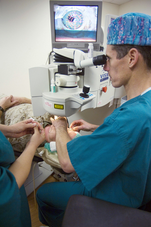
📖 OpenStax College Physics, Section 26.2. openstax.org · CC BY 4.0
- Explain the simple theory of color vision.
- Outline the coloring properties of light sources.
- Describe the retinex theory of color vision.
The gift of vision is made richer by the existence of color. Objects and lights abound with thousands of hues that stimulate our eyes, brains, and emotions. Two basic questions are addressed in this brief treatment -- what does color mean in scientific terms, and how do we, as humans, perceive it?
We have already noted that color is associated with the wavelength of visible electromagnetic radiation. When our eyes receive pure-wavelength light, we tend to see only a few colors. Six of these (most often listed) are red, orange, yellow, green, blue, and violet. These are the rainbow of colors produced when white light is dispersed according to different wavelengths. There are thousands of otherhuesthat we can perceive. These include brown, teal, gold, pink, and white. One simple theory of color vision implies that all these hues are our eye’s response to different combinations of wavelengths. This is true to an extent, but we find that color perception is even subtler than our eye’s response for various wavelengths of light.
The two major types of light-sensing cells (photoreceptors) in the retina arerods and conesRods are more sensitive than cones by a factor of about 1000 and are solely responsible for peripheral vision as well as vision in very dark environments. They are also important for motion detection. There are about 120 million rods in the human retina. Rods do not yield color information. You may notice that you lose color vision when it is very dark, but you retain the ability to discern grey scales.
TAKE-HOME EXPERIMENT: RODS AND CONES
Cones are most concentrated in the fovea, the central region of the retina. There are no rods here. The fovea is at the center of the macula, a 5 mm diameter region responsible for our central vision. The cones work best in bright light and are responsible for high resolution vision. There are about 6 million cones in the human retina. There are three types of cones, and each type is sensitive to different ranges of wavelengths, as illustrated in Figure . Asimplified theory of color visionis that there are threeprimary colorscorresponding to the three types of cones. The thousands of other hues that we can distinguish among are created by various combinations of stimulations of the three types of cones. Color television uses a three-color system in which the screen is covered with equal numbers of red, green, and blue phosphor dots. The broad range of hues a viewer sees is produced by various combinations of these three colors. For example, you will perceive yellow when red and green are illuminated with the correct ratio of intensities. White may be sensed when all three are illuminated. Then, it would seem that all hues can be produced by adding three primary colors in various proportions. But there is an indication that color vision is more sophisticated. There is no unique set of three primary colors. Another set that works is yellow, green, and blue. A further indication of the need for a more complex theory of color vision is that various different combinations can produce the same hue. Yellow can be sensed with yellow light, or with a combination of red and green, and also with white light from which violet has been removed. The three-primary-colors aspect of color vision is well established; more sophisticated theories expand on it rather than deny it.
![A line graph of sensitivity on y axis and wavelength on x axis is shown. The graph depicts three skewed curves, representing three types of cones and each type is sensitive to different ranges of wavelengths. The range of wavelength is between three hundred and fifty to seven hundred nanometers. For blue range, the curve peaks at four hundred and twenty nanometers and sensitivity is zero point two. For green range, the curve peaks at five hundred and twenty nanometers and the sensitivity is shown to be one point zero. For yellow range, the curve peaks at five hundred and ninety nanometers and sensitivity is at one point zero.](images/ch26/fig26-10-a-line-graph-of-sensitivity-on-y-axis-an.jpg)
Consider why various objects display color -- that is, why are feathers blue and red in a crimson rosella? Thetrue color of an objectis defined by its absorptive or reflective characteristics. Figure shows white light falling on three different objects, one pure blue, one pure red, and one black, as well as pure red light falling on a white object. Other hues are created by more complex absorption characteristics. Pink, for example on a galah cockatoo, can be due to weak absorption of all colors except red. An object can appear a different color under non-white illumination. For example, a pure blue object illuminated with pure red light willappearblack, because it absorbs all the red light falling on it. But, the true color of the object is blue, which is independent of illumination.
![Four flat rectangular structures, named as Blue object, Red object, Black object, and White object are shown. The red, blue, and black objects are illuminated by white light shown by six rays of red, orange, yellow, green, blue, and violet. The blue rectangle is emitting blue ray and it appears blue. The red rectangle is emitting red ray and it appears red while the black rectangle has absorbed all colors and appears black. The white rectangle is illuminated only by red light and emits red ray but appears white.](images/ch26/fig26-11-four-flat-rectangular-structures-named-a.jpg)
Similarly,light sources have colorsthat are defined by the wavelengths they produce. A helium-neon laser emits pure red light. In fact, the phrase “pure red light” is defined by having a sharp constrained spectrum, a characteristic of laser light. The Sun produces a broad yellowish spectrum, fluorescent lights emit bluish-white light, and incandescent lights emit reddish-white hues as seen in Figure 3. As you would expect, you sense these colors when viewing the light source directly or when illuminating a white object with them. All of this fits neatly into the simplified theory that a combination of wavelengths produces various hues.
TAKE-HOME EXPERIMENT: EXPLORING COLOR ADDITION
This activity is best done with plastic sheets of different colors as they allow more light to pass through to our eyes. However, thin sheets of paper and fabric can also be used. Overlay different colors of the material and hold them up to a white light. Using the theory described above, explain the colors you observe. You could also try mixing different crayon colors.
![Four curves showing emission spectra for light sources like the Sun shown as curve A, fluorescent light source shown as curve B, incandescent light source as curve C, and helium-neon laser light source as curve D are depicted in a relative intensity versus wavelength graph. Curve A is a simple curve. Curve B has four spikes at different intensity. Curve C is a linear curve. Curve D is represented as a spike with relative intensity around two hundred and twenty on the scale of zero to two hundred and twenty and wavelength around six hundred and twenty nanometers.](images/ch26/fig26-12-four-curves-showing-emission-spectra-for.jpg)
The eye-brain color-sensing system can, by comparing various objects in its view, perceive the true color of an object under varying lighting conditions -- an ability that is calledcolor constancy. We can sense that a white tablecloth, for example, is white whether it is illuminated by sunlight, fluorescent light, or candlelight. The wavelengths entering the eye are quite different in each case, as the graphs in Figure 3 imply, but our color vision can detect the true color by comparing the tablecloth with its surroundings.
Theories that take color constancy into account are based on a large body of anatomical evidence as well as perceptual studies. There are nerve connections among the light receptors on the retina, and there are far fewer nerve connections to the brain than there are rods and cones. This means that there is signal processing in the eye before information is sent to the brain. For example, the eye makes comparisons between adjacent light receptors and is very sensitive to edges as seen in Figure 4. Rather than responding simply to the light entering the eye, which is uniform in the various rectangles in this figure, the eye responds to the edges and senses false darkness variations.
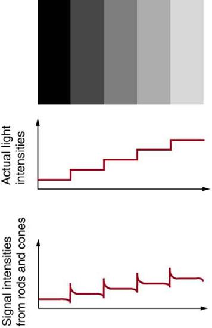
One theory that takes various factors into account was advanced by Edwin Land (1909 – 1991), the creative founder of the Polaroid Corporation. Land proposed, based partly on his many elegant experiments, that the three types of cones are organized into systems calledretinexes. Each retinex forms an image that is compared with the others, and the eye-brain system thus can compare a candle-illuminated white table cloth with its generally reddish surroundings and determine that it is actually white. Thisretinex theory of color visionis an example of modified theories of color vision that attempt to account for its subtleties. One striking experiment performed by Land demonstrates that some type of image comparison may produce color vision. Two pictures are taken of a scene on black-and-white film, one using a red filter, the other a blue filter. Resulting black-and-white slides are then projected and superimposed on a screen, producing a black-and-white image, as expected. Then a red filter is placed in front of the slide taken with a red filter, and the images are again superimposed on a screen. You would expect an image in various shades of pink, but instead, the image appears to humans in full color with all the hues of the original scene. This implies that color vision can be induced by comparison of the black-and-white and red images. Color vision is not completely understood or explained, and the retinex theory is not totally accepted. It is apparent that color vision is much subtler than what a first look might imply.
PHET EXPLORATIONS: COLOR VISION
Make a whole rainbow by mixing red, green, and blue light. Change the wavelength of a monochromatic beam or filter white light. View the light as a solid beam, or see the individual photons.
📖 OpenStax College Physics, Section 26.3. openstax.org · CC BY 4.0
- Investigate different types of microscopes.
- Learn how image is formed in a compound microscope.
Although the eye is marvelous in its ability to see objects large and small, it obviously has limitations to the smallest details it can detect. Human desire to see beyond what is possible with the naked eye led to the use of optical instruments. In this section we will examine microscopes, instruments for enlarging the detail that we cannot see with the unaided eye. The microscope is a multiple-element system having more than a single lens or mirror (Figure . A microscope can be made from two convex lenses. The image formed by the first element becomes the object for the second element. The second element forms its own image, which is the object for the third element, and so on. Ray tracing helps to visualize the image formed. If the device is composed of thin lenses and mirrors that obey the thin lens equations, then it is not difficult to describe their behavior numerically.
Microscopes were first developed in the early 1600s by eyeglass makers in The Netherlands and Denmark. The simplestcompound microscopeis constructed from two convex lenses as shown schematically in Figure 2. The first lens is called theobjective lens, and has typical magnification values from \(5 \times\) to \(100 \times\). In standard microscopes, the objectives are mounted such that when you switch between objectives, the sample remains in focus. Objectives arranged in this way are described as parfocal. The second, theeyepiece, also referred to as the ocular, has several lenses which slide inside a cylindrical barrel. The focusing ability is provided by the movement of both the objective lens and the eyepiece. The purpose of a microscope is to magnify small objects, and both lenses contribute to the final magnification. Additionally, the final enlarged image is produced in a location far enough from the observer to be easily viewed, since the eye cannot focus on objects or images that are too close.
![A ray diagram from left to right shows a virtual inverted enlarged final image of the object, a small object in upright position, a convex objective lens, inverted smaller image of the object, a large convex eye-piece and an eye on an optical axis. The object h’ is placed just outside F subscript O two, the principal focus of the objective lens. Rays from the object are passing through the objective lens, converging and forming an inverted magnified image h subscript I, which acts as an object for the eyepiece and passing at the eye. Dotted lines are joined backward from the rays entering the eyepiece at the tip of the virtual, magnified, inverted and final image of the object given as h subscript i. Distance of the object for the objective lens and distance of the image from it is given as d subscript o and d subscript I respectively.](images/ch26/fig26-15-a-ray-diagram-from-left-to-right-shows-a.jpg)
To see how the microscope in Figure 2 forms an image, we consider its two lenses in succession. The object is slightly farther away from the objective lens than its focal length \(f_{o}\), producing a case 1 image that is larger than the object. This first image is the object for the second lens, or eyepiece. The eyepiece is intentionally located so it can further magnify the image. The eyepiece is placed so that the first image is closer to it than its focal length \(f_{e}\). Thus the eyepiece acts as a magnifying glass, and the final image is made even larger. The final image remains inverted, but it is farther from the observer, making it easy to view (the eye is most relaxed when viewing distant objects and normally cannot focus closer than 25 cm). Since each lens produces a magnification that multiplies the height of the image, it is apparent that the overall magnification \(m\) is the product of the individual magnifications: \[m = m_{o}m_{e} \label{26.5.1},\] where \(m_{o}\) is the magnification of the objective and \(m_{e}\) is the magnification of the eyepiece. This equation can be generalized for any combination of thin lenses and mirrors that obey the thin lens equations.
OVERALL MAGNIFICATION
The overall magnification of a multiple-element system is the product of the individual magnifications of its elements.
Calculate the magnification of an object placed 6.20 mm from a compound microscope that has a 6.00 mm focal length objective and a 50.0 mm focal length eyepiece. The objective and eyepiece are separated by 23.0 cm.
Strategy and Concept:
This situation is similar to that shown in Figure 2. To find the overall magnification, we must find the magnification of the objective, then the magnification of the eyepiece. This involves using the thin lens equation.
The magnification of the objective lens is given as \[m_{o} = -\frac{d_{i}}{d_{o}}\label{26.5.2},\] where \(d_{o}\) and \(d_{i}\) are the object and image distances, respectively, for the objective lens as labeled in Figure 2. The object distance is given to be \(d_{o} = 6.20 mm\), but the image distance \(d_{i}\) is not known. Isolating \(d_{i}\), we have \[\frac{1}{d_{i}} = \frac{1}{f_{o}} - \frac{1}{d_{o}} \label{26.5.3},\] where \(f_{o}\) is the focal length of the objective lens. Substituting known values gives \[\frac{1}{d_{i}} = \frac{1}{6.00 mm} - \frac{1}{6.20 mm} = \frac{0.00538}{mm} .\] We invert this to find \(d_{i}\): \[d_{i} = 186 mm.\] Substituting this into the expression for \(m_{o}\) gives \[m_{o} = - \frac{d_{i}}{d_{o}} = - \frac{186 mm}{6.20 mm} = -30.0.\] Now we must find the magnification of the eyepiece, which is given by \[m_{e} = -\frac{d_{i}'}{d_{o}'},\label{26.5.4}\] where \(d_{i}'\) and \(d_{o}'\) are the image and object distances for the eyepiece (see Figure 2). The object distance is the distance of the first image from the eyepiece. Since the first image is 186 mm to the right of the objective and the eyepiece is 230 mm to the right of the objective, the object distance is \(d_{o}' = 230 mm - 186 mm = 44.0 mm\). This places the first image closer to the eyepiece than its focal length, so that the eyepiece will form a case 2 image as shown in the figure. We still need to find the location of the final image \(d_{i}'\) in order to find the magnification. This is done as before to obtain a value for \(1/d_{i}'\): \[\frac{1}{d_{i}'} = \frac{1}{f_{e}} - \frac{1}{d_{o}'} = \frac{1}{50.0 mm} - \frac{1}{44.0 mm} = - \frac{0.00273}{mm}.\] Inverting gives \[d_{i}' = - \frac{mm}{0.00273} = -367 mm.\] The eyepiece’s magnification is thus \[m_{e} = - \frac{d_{i}'}{d_{o}'} = - \frac{-367 mm}{44.0 mm} = 8.33.\] So the overall magnification is \[m = m_{o}m_{e} = \left( -30.0 \right) \left( 8.33 \right) = -250.\]
Both the objective and the eyepiece contribute to the overall magnification, which is large and negative, consistent with Figure 2, where the image is seen to be large and inverted. In this case, the image is virtual and inverted, which cannot happen for a single element (case 2 and case 3 images for single elements are virtual and upright). The final image is 367 mm (0.367 m) to the left of the eyepiece. Had the eyepiece been placed farther from the objective, it could have formed a case 1 image to the right. Such an image could be projected on a screen, but it would be behind the head of the person in the figure and not appropriate for direct viewing. The procedure used to solve this example is applicable in any multiple-element system. Each element is treated in turn, with each forming an image that becomes the object for the next element. The process is not more difficult than for single lenses or mirrors, only lengthier.
Normal optical microscopes can magnify up to \(1500 \times \) with a theoretical resolution of \(-0.2 \mu m\). The lenses can be quite complicated and are composed of multiple elements to reduce aberrations. Microscope objective lenses are particularly important as they primarily gather light from the specimen. Three parameters describe microscope objectives: thenumerical aperture(\(NA\)), the magnification (\(m\)), and the working distance. The \(NA\) is related to the light gathering ability of a lens and is obtained using the angle of acceptance \(\theta\) formed by the maximum cone of rays focusing on the specimen (see Figure 3a) and is given by \[NA = n \sin{\alpha} \label{26.5.5},\] where \(n\) is the refractive index of the medium between the lens and the specimen and \(\alpha = \theta / 2\). As the angle of acceptance given by \(\theta\) increases, \(NA\) becomes larger and more light is gathered from a smaller focal region giving higher resolution. A \(0.75 NA\) objective gives more detail than a \(0.10 NA\) objective.
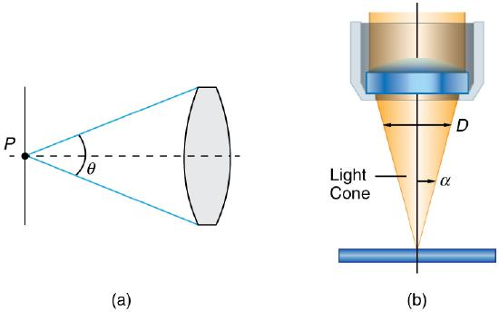
While the numerical aperture can be used to compare resolutions of various objectives, it does not indicate how far the lens could be from the specimen. This is specified by the “working distance,” which is the distance (in mm usually) from the front lens element of the objective to the specimen, or cover glass. The higher the \(NA\) the closer the lens will be to the specimen and the more chances there are of breaking the cover slip and damaging both the specimen and the lens. The focal length of an objective lens is different than the working distance. This is because objective lenses are made of a combination of lenses and the focal length is measured from inside the barrel. The working distance is a parameter that microscopists can use more readily as it is measured from the outermost lens. The working distance decreases as the \(NA\) and magnification both increase.
The term \(f/ \#\) in general is called the \(f\)-number and is used to denote the light per unit area reaching the image plane. In photography, an image of an object at infinity is formed at the focal point and the \(f\)-number is given by the ratio of the focal length \(f\) of the lens and the diameter \(D\) of the aperture controlling the light into the lens (see Figure 3b). If the acceptance angle is small the \(NA\) of the lens can also be used as given below. \[f/ \# = \frac{f}{D} \approx \frac{1}{2NA} \label{26.5.6}.\] As the \(f\)-number decreases, the camera is able to gather light from a larger angle, giving wide-angle photography. As usual there is a trade-off. A greater \(f/ \#\) means less light reaches the image plane. A setting of \(f/16\) usually allows one to take pictures in bright sunlight as the aperture diameter is small. In optical fibers, light needs to be focused into the fiber. Figure 4 shows the angle used in calculating the \(NA\) of an optical fiber.
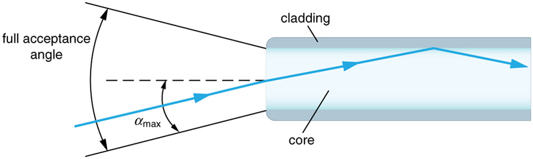
Can the \(NA\) be larger than 1.00? The answer is ‘yes’ if we use immersion lenses in which a medium such as oil, glycerine or water is placed between the objective and the microscope cover slip. This minimizes the mismatch in refractive indices as light rays go through different media, generally providing a greater light-gathering ability and an increase in resolution. Figure 5 shows light rays when using air and immersion lenses.
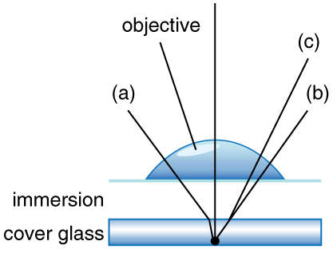
When using a microscope we do not see the entire extent of the sample. Depending on the eyepiece and objective lens we see a restricted region which we say is the field of view. The objective is then manipulated in two-dimensions above the sample to view other regions of the sample. Electronic scanning of either the objective or the sample is used in scanning microscopy. The image formed at each point during the scanning is combined using a computer to generate an image of a larger region of the sample at a selected magnification.
When using a microscope, we rely on gathering light to form an image. Hence most specimens need to be illuminated, particularly at higher magnifications, when observing details that are so small that they reflect only small amounts of light. To make such objects easily visible, the intensity of light falling on them needs to be increased. Special illuminating systems called condensers are used for this purpose. The type of condenser that is suitable for an application depends on how the specimen is examined, whether by transmission, scattering or reflecting. See Figure 6 for an example of each. White light sources are common and lasers are often used. Laser light illumination tends to be quite intense and it is important to ensure that the light does not result in the degradation of the specimen.
![All four parts show ray diagrams of a specimen in different types of microscopes. Part a shows a ray diagram with rays through a condenser lens to the object and then up to the objective lens of the microscope. Part b shows an alternative arrangement where rays of light are reflected off a concave condenser mirror to the specimen and then up to the objective lens of the microscope. Part c shows dark field illumination where the illuminating light beam is fragmented by an annular stop so that its rays only go through the outer portion of the condenser lens which causes them to miss the objective lens. Part d shows high magnification illumination where light rays from a laser are reflected off a plan glass reflector, then go through the objective lens to the lens and then return as scatter light through the objective lens.](images/ch26/fig26-19-all-four-parts-show-ray-diagrams-of-a-sp.jpg)
We normally associate microscopes with visible light but x ray and electron microscopes provide greater resolution. The focusing and basic physics is the same as that just described, even though the lenses require different technology. The electron microscope requires vacuum chambers so that the electrons can proceed unheeded. Magnifications of 50 million times provide the ability to determine positions of individual atoms within materials. An electron microscope is shown in Figure 7. We do not use our eyes to form images; rather images are recorded electronically and displayed on computers. In fact observing and saving images formed by optical microscopes on computers is now done routinely. Video recordings of what occurs in a microscope can be made for viewing by many people at later dates. Physics provides the science and tools needed to generate the sequence of time-lapse images of meiosis similar to the sequence sketched in Figure 8.
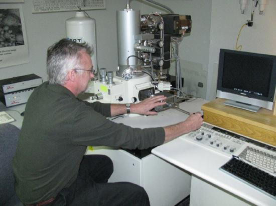
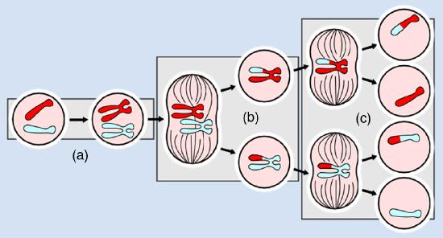
TAKE-HOME EXPERIMENT: MAKE A LENS
Look through a clear glass or plastic bottle and describe what you see. Now fill the bottle with water and describe what you see. Use the water bottle as a lens to produce the image of a bright object and estimate the focal length of the water bottle lens. How is the focal length a function of the depth of water in the bottle?
📖 OpenStax College Physics, Section 26.4. openstax.org · CC BY 4.0
- Outline the invention of a telescope.
- Describe the working of a telescope.
Telescopes are meant for viewing distant objects, producing an image that is larger than the image that can be seen with the unaided eye. Telescopes gather far more light than the eye, allowing dim objects to be observed with greater magnification and better resolution. Although Galileo is often credited with inventing the telescope, he actually did not. What he did was more important. He constructed several early telescopes, was the first to study the heavens with them, and made monumental discoveries using them. Among these are the moons of Jupiter, the craters and mountains on the Moon, the details of sunspots, and the fact that the Milky Way is composed of vast numbers of individual stars.
Figure \(\PageIndex{1a}\) shows a telescope made of two lenses, the convex objective and the concave eyepiece, the same construction used by Galileo. Such an arrangement produces an upright image and is used in spyglasses and opera glasses.
![Part a of the figure depicts the internal functioning of a telescope; from left to right it has an upright image of a tree, a convex lens objective, a concave lens eyepiece, and a picture of eye where rays enter. Parallel rays strike the objective convex lens, converge; strike the concave eyepiece, and enter the eye. Dotted lines from the striking rays of the eyepiece are drawn backside and join at the beginning of the final image. Part b of the figure, from left to right, has an inverted enlarged image of a tree, a convex objective, a smaller inverted image of a tree, a convex eyepiece and a picture of an eye viewing the image. Rays from a very distant object pass through the objective lens, focus at a focal point f sub o, forming a smaller upside-down image of a tree of height h sub i, converge and pass through the eyepiece to reach the eye. Dotted lines drawn backwards focus at the tip of the final enlarged inverted image of a tree of height h prime sub i, from the rays striking the eyepiece are also shown. An angle theta, subtended by the rays striking the objective lens and an angle, subtended by the telescopic enlarged inverted image are also depicted.](images/ch26/fig26-22-part-a-of-the-figure-depicts-the-interna.jpg)
The most common two-lens telescope, like the simple microscope, uses two convex lenses and is shown in Figure 1b. The object is so far away from the telescope that it is essentially at infinity compared with the focal lengths of the lenses (\(d \approx \infty \)). The first image is thus produced at \(d_{i} = f_{o}\), as shown in the figure. To prove this, note that
Because \(1/\infty = 0\), this simplifies to
which implies that \(d_{i} = f_{o}\), as claimed. It is true that for any distant object and any lens or mirror, the image is at the focal length.
The first image formed by a telescope objective as seen in Figure \(\PageIndex{1b}\) will not be large compared with what you might see by looking at the object directly. For example, the spot formed by sunlight focused on a piece of paper by a magnifying glass is the image of the Sun, and it is small. The telescope eyepiece (like the microscope eyepiece) magnifies this first image. The distance between the eyepiece and the objective lens is made slightly less than the sum of their focal lengths so that the first image is closer to the eyepiece than its focal length. That is, \(d_{o}'\) is less that \(f_{e}\), and so the eyepiece forms a case 2 image that is large and to the left for easy viewing. If the angle subtended by an object as viewed by the unaided eye is \(\theta\), and the angle subtended by the telescope image is \(\theta '\), then theangular magnification\(M\) is defined to be their ratio. That is, \(M = \theta ' / \theta \). It can be shown that the angular magnification of a telescope is related to the focal lengths of the objective and eyepiece; and is given by
The minus sign indicates the image is inverted. To obtain the greatest angular magnification, it is best to have a long focal length objective and a short focal length eyepiece. The greater the angular magnification \(M\), the larger an object will appear when viewed through a telescope, making more details visible. Limits to observable details are imposed by many factors, including lens quality and atmospheric disturbance.
The image in most telescopes is inverted, which is unimportant for observing the stars but a real problem for other applications, such as telescopes on ships or telescopic gun sights. If an upright image is needed, Galileo’s arrangement in Figure \(\PageIndex{1a}\) can be used. But a more common arrangement is to use a third convex lens as an eyepiece, increasing the distance between the first two and inverting the image once again as seen in Figure .
![A ray diagram from left to right depicts a concave objective lens, a small inverted image of a tree, a magnified upright final image of tree, an erecting concave lens, a small upright image of a tree, concave lens as an eyepiece, and an eye to view on the same optical axis. Rays from a distant object strike the edges of the objective lens, converge at the focus of the focal point, form a small inverted image of the object and pass through the erecting lens, again forming the upright small image of the object, and finally, the rays pass through the eyepiece to the eye. Dotted lines joined backwards from the rays striking the eyepiece meet at a point where the final enlarged upright image of the object is formed.](images/ch26/fig26-23-a-ray-diagram-from-left-to-right-depicts.jpg)
A telescope can also be made with a concave mirror as its first element or objective, since a concave mirror acts like a convex lens as seen in Figure . Flat mirrors are often employed in optical instruments to make them more compact or to send light to cameras and other sensing devices. There are many advantages to using mirrors rather than lenses for telescope objectives. Mirrors can be constructed much larger than lenses and can, thus, gather large amounts of light, as needed to view distant galaxies, for example. Large and relatively flat mirrors have very long focal lengths, so that great angular magnification is possible.
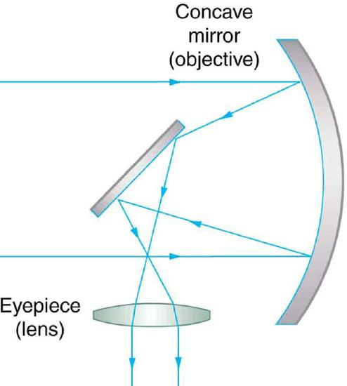
Telescopes, like microscopes, can utilize a range of frequencies from the electromagnetic spectrum. Figure 4a shows the Australia Telescope Compact Array, which uses six 22-m antennas for mapping the southern skies using radio waves. Figure \(\PageIndex{4b}\) shows the focusing of x rays on the Chandra X-ray Observatory -- a satellite orbiting earth since 1999 and looking at high temperature events as exploding stars, quasars, and black holes. X rays, with much more energy and shorter wavelengths than RF and light, are mainly absorbed and not reflected when incident perpendicular to the medium. But they can be reflected when incident at small glancing angles, much like a rock will skip on a lake if thrown at a small angle. The mirrors for the Chandra consist of a long barrelled pathway and 4 pairs of mirrors to focus the rays at a point 10 meters away from the entrance. The mirrors are extremely smooth and consist of a glass ceramic base with a thin coating of metal (iridium). Four pairs of precision manufactured mirrors are exquisitely shaped and aligned so that x rays ricochet off the mirrors like bullets off a wall, focusing on a spot.
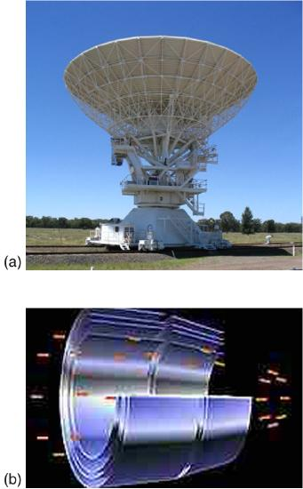
A current exciting development is a collaborative effort involving 17 countries to construct a Square Kilometre Array (SKA) of telescopes capable of covering from 80 MHz to 2 GHz. The initial stage of the project is the construction of the Australian Square Kilometre Array Pathfinder in Western Australia (see Figure 5). The project will use cutting-edge technologies such asadaptive opticsin which the lens or mirror is constructed from lots of carefully aligned tiny lenses and mirrors that can be manipulated using computers. A range of rapidly changing distortions can be minimized by deforming or tilting the tiny lenses and mirrors. The use of adaptive optics in vision correction is a current area of research.
📖 OpenStax College Physics, Section 26.5. openstax.org · CC BY 4.0
- Describe optical aberration.
Real lenses behave somewhat differently from how they are modeled using the thin lens equations, producingaberrations.An aberration is a distortion in an image. There are a variety of aberrations due to a lens size, material, thickness, and position of the object. One common type of aberration is chromatic aberration, which is related to color. Since the index of refraction of lenses depends on color or wavelength, images are produced at different places and with different magnifications for different colors. (The law of reflection is independent of wavelength, and so mirrors do not have this problem. This is another advantage for mirrors in optical systems such as telescopes.) Figure \(\PageIndex{1a}\) shows chromatic aberration for a single convex lens and its partial correction with a two-lens system. Violet rays are bent more than red, since they have a higher index of refraction and are thus focused closer to the lens. The diverging lens partially corrects this, although it is usually not possible to do so completely. Lenses of different materials and having different dispersions may be used. For example an achromatic doublet consisting of a converging lens made of crown glass and a diverging lens made of flint glass in contact can dramatically reduce chromatic aberration (Figure \(\PageIndex{1b}\)).
![Part a shows a single convex lens. White light source rays are striking the edges and the optical axis of the lens. Visible spectrum of light is refracted from the lens and is falling on the axis. Violet rays have bent more than red rays and are focused closer to the lens shown as V and R dots at different location. Part b shows an achromatic doublet lens. White light source rays are striking the edges and the optical axis of the lens. Rays are getting refracted within the lens and a visible spectrum of light is falling at one point of the axis shown as a dot.](images/ch26/fig26-27-part-a-shows-a-single-convex-lens-white-.jpg)
Quite often in an imaging system the object is off-center. Consequently, different parts of a lens or mirror do not refract or reflect the image to the same point. This type of aberration is called a coma and is shown in Figure . The image in this case often appears pear-shaped. Another common aberration is spherical aberration where rays converging from the outer edges of a lens converge to a focus closer to the lens and rays closer to the axis focus further (Figure . Aberrations due to astigmatism in the lenses of the eyes are discussed in "Vision Correction," and a chart used to detect astigmatism is shown inthe link. Such aberrations and can also be an issue with manufactured lenses.
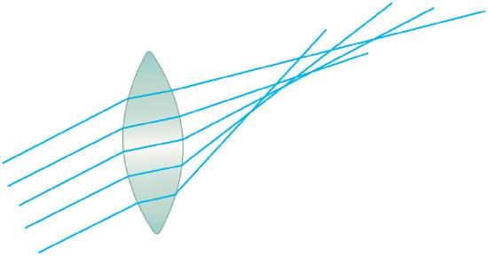
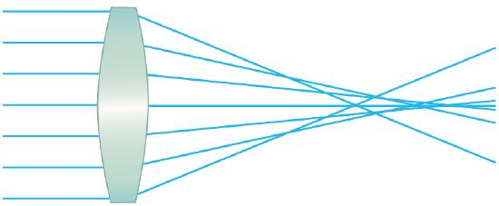
The image produced by an optical system needs to be bright enough to be discerned. It is often a challenge to obtain a sufficiently bright image. The brightness is determined by the amount of light passing through the optical system. The optical components determining the brightness are the diameter of the lens and the diameter of pupils, diaphragms or aperture stops placed in front of lenses. Optical systems often have entrance and exit pupils to specifically reduce aberrations but they inevitably reduce brightness as well. Consequently, optical systems need to strike a balance between the various components used. The iris in the eye dilates and constricts, acting as an entrance pupil. You can see objects more clearly by looking through a small hole made with your hand in the shape of a fist. Squinting, or using a small hole in a piece of paper, also will make the object sharper.
So how are aberrations corrected? The lenses may also have specially shaped surfaces, as opposed to the simple spherical shape that is relatively easy to produce. Expensive camera lenses are large in diameter, so that they can gather more light, and need several elements to correct for various aberrations. Further, advances in materials science have resulted in lenses with a range of refractive indices -- technically referred to as graded index (GRIN) lenses. Spectacles often have the ability to provide a range of focusing ability using similar techniques. GRIN lenses are particularly important at the end of optical fibers in endoscopes. Advanced computing techniques allow for a range of corrections on images after the image has been collected and certain characteristics of the optical system are known. Some of these techniques are sophisticated versions of what are available on commercial packages like Adobe Photoshop.
📖 OpenStax College Physics, Section 26.6. openstax.org · CC BY 4.0
| Section | Title |
|---|---|
| 26.1 | 26.1: Physics of the Eye |
| 26.2 | 26.2: Vision Correction |
| 26.3 | 26.3: Color and Color Vision |
| 26.4 | 26.4: Microscopes |
| 26.5 | 26.5: Telescopes |
| 26.6 | 26.6: Aberrations |